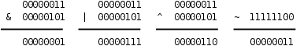
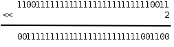
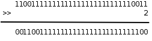

第 16 章 运算符详解
本章介绍很多前面没有讲过的运算符，重点是位运算，然后引出一个重要的概念 Sequence Point，在最后一节总结 C 语言各种运算符的优先级和结合性。
1. 位运算
整数在计算机中用二进制的位来表示，C 语言提供一些运算符可以直接操作整数中的位，称为位运算，这些运算符的操作数都必须是整型的。在以后的学习中你会发现，有些信息利用整数中的某几个位来存储，要访问这些位，仅仅有对整数的操作是不够的，必须借助位运算，例如附录 A 第 2 节「Unicode 和 UTF-8」介绍的 UTF-8 编码就是如此，学完本节之后你应该能自己写出 UTF-8 的编码和解码程序。本节首先介绍各种位运算符，然后介绍与位运算有关的编程技巧。
1.1. 按位与、或、异或、取反运算
在第 4 章「分支语句」第 3 节「布尔代数」讲过逻辑与、或、非运算，并列出了真值表，对于整数中的位也可以做与、或、非运算，C 语言提供了按位与（Bitwise AND）运算符 &、按位或（Bitwise OR）运算符 | 和按位取反（Bitwise NOT）运算符 ~，此外还有按位异或（Bitwise XOR）运算符 ^，我们在第 14 章「计算机中数的表示」第 1 节「为什么计算机用二进制计数」讲过异或运算。下面用二进制的形式举几个例子。
图 16.1. 位运算

注意，&、|、^ 运算符都是要做 Usual Arithmetic Conversion 的（其中有一步是 Integer Promotion），~ 运算符也要做 Integer Promotion，所以在 C 语言中其实并不存在 8 位整数的位运算，操作数在做位运算之前都至少被提升为 int 型了，上面用 8 位整数举例只是为了书写方便。比如：
unsigned char c = 0xfc;
unsigned int i = ~c;
计算过程是这样的：常量 0xfc 是 int 型的，赋给 c 要转成 unsigned char，值不变；c 的十六进制表示是 fc，计算 ~c 时先提升为整型（000000fc）然后取反，最后结果是 ffffff03。注意，如果把 ~c 看成是 8 位整数的取反，最后结果就得 3 了，这就错了。为了避免出错，一是尽量避免不同类型之间的赋值，二是每一步计算都要按上一章讲的类型转换规则仔细检查。
1.2. 移位运算
移位运算符（Bitwise Shift）包括左移 << 和右移 >>。左移将一个整数的各二进制位全部左移若干位，例如 0xcfffffff3<<2 得到 0x3fffffcc：
图 16.2. 左移运算

最高两位的 11 被移出去了，最低两位又补了两个 0，其它位依次左移两位。但要注意，移动的位数必须小于左操作数的总位数，比如上面的例子，左边是 unsigned int 型，如果左移的位数大于等于 32 位，则结果是 Undefined。移位运算符不同于 + - * / == 等运算符，两边操作数的类型不要求一致，但两边操作数都要做 Integer Promotion，整个表达式的类型和左操作数提升后的类型相同。
复习一下第 14 章「计算机中数的表示」第 2 节「不同进制之间的换算」讲过的知识可以得出结论，在一定的取值范围内，将一个整数左移 1 位相当于乘以 2。比如二进制 11（十进制 3）左移一位变成 110，就是 6，再左移一位变成 1100，就是 12。读者可以自己验证这条规律对有符号数和无符号数都成立，对负数也成立。当然，如果左移改变了最高位（符号位），那么结果肯定不是乘以 2 了，所以我加了个前提「在一定的取值范围内」。由于计算机做移位比做乘法快得多，编译器可以利用这一点做优化，比如看到源代码中有 i * 8，可以编译成移位指令而不是乘法指令。
当操作数是无符号数时，右移运算的规则和左移类似，例如 0xcfffffff3>>2 得到 0x33fffffc：
图 16.3. 右移运算

最低两位的 11 被移出去了，最高两位又补了两个 0，其它位依次右移两位。和左移类似，移动的位数也必须小于左操作数的总位数，否则结果是 Undefined。在一定的取值范围内，将一个整数右移 1 位相当于除以 2，小数部分截掉。
当操作数是有符号数时，右移运算的规则比较复杂：
- 如果是正数，那么高位移入 0
- 如果是负数，那么高位移入 1 还是 0 不一定，这是 Implementation-defined 的。对于 x86 平台的
gcc编译器，最高位移入 1，也就是仍保持负数的符号位，这种处理方式对负数仍然保持了「右移 1 位相当于除以 2」的性质。
综上所述，由于类型转换和移位等问题，用有符号数做位运算是很不方便的，所以，建议只对无符号数做位运算，以减少出错的可能。
习题
-
下面两行
printf打印的结果有何不同？请读者比较分析一下。%x转换说明的含义详见第 25 章「C 标准库」第 2.9 节「格式化 I/O 函数」。int i = 0xcffffff3; printf("%x\n", 0xcffffff3>>2); printf("%x\n", i>>2);
1.3. 掩码
如果要对一个整数中的某些位进行操作，怎样表示这些位在整数中的位置呢？可以用掩码（Mask）来表示。比如掩码 0x0000ff00 表示对一个 32 位整数的 8 ~ 15 位进行操作，举例如下。
-
取出 8 ~ 15 位。
unsigned int a, b, mask = 0x0000ff00; a = 0x12345678; b = (a & mask) >> 8; /* 0x00000056 */这样也可以达到同样的效果：
b = (a >> 8) & ~(~0U << 8); -
将 8 ~ 15 位清 0。
unsigned int a, b, mask = 0x0000ff00; a = 0x12345678; b = a & ~mask; /* 0x12340078 */ -
将 8 ~ 15 位置 1。
unsigned int a, b, mask = 0x0000ff00; a = 0x12345678; b = a | mask; /* 0x1234ff78 */
习题
- 统计一个无符号整数的二进制表示中 1 的个数，函数原型是
int countbit(unsigned int x);。 - 用位操作实现无符号整数的乘法运算，函数原型是
unsigned int multiply(unsigned int x, unsigned int y);。例如：(11011)2×(10010)2=((11011)2<<1)+((11011)2<<4)。 - 对一个 32 位无符号整数做循环右移，函数原型是
unsigned int rotate_right(unsigned int x);。所谓循环右移就是把低位移出去的部分再补到高位上去，例如rotate_right(0xdeadbeef, 16)的值应该是0xefdeadbe。
1.4. 异或运算的一些特性
-
一个数和自己做异或的结果是 0。如果需要一个常数 0，x86 平台的编译器可能会生成这样的指令：
xorl %eax, %eax。不管eax寄存器里的值原来是多少，做异或运算都能得到 0，这条指令比同样效果的movl $0, %eax指令快，因为前者只需要在 CPU 内部计算，而后者需要访问内存，在下一章第 5 节「Memory Hierarchy」详细介绍。 -
从异或的真值表可以看出，不管是 0 还是 1，和 0 做异或保持原值不变，和 1 做异或得到原值的相反值。可以利用这个特性配合掩码实现某些位的翻转，例如：
unsigned int a, b, mask = 1U << 6; a = 0x12345678; b = a ^ mask; /* flip the 6th bit */ -
如果 a1 ^ a2 ^ a3 ^ ... ^ an 的结果是 1，则表示 a1、a2、a3...an 之中 1 的个数为奇数个，否则为偶数个。这条性质可用于奇偶校验（Parity Check），比如在串口通信过程中，每个字节的数据都计算一个校验位，数据和校验位一起发送出去，这样接收方可以根据校验位粗略地判断接收到的数据是否有误。
-
x ^ x ^ y == y，因为 x ^ x == 0，0 ^ y == y。这个性质有什么用呢？我们来看这样一个问题：交换两个变量的值，不得借助额外的存储空间，所以就不能采用
temp = a; a = b; b = temp;的办法了。利用位运算可以这样做交换：a = a ^ b; b = b ^ a; a = a ^ b;
分析一下这个过程。为了避免混淆，把 a 和 b 的初值分别记为 a0 和 b0。第一行，a = a<sub>0</sub> ^ b<sub>0</sub>；第二行，把 a 的新值代入，得到 b = b<sub>0</sub> ^ a<sub>0</sub> ^ b<sub>0</sub>，等号右边的 b0 相当于上面公式中的 x，a0 相当于 y，所以结果为 a0；第三行，把 a 和 b 的新值代入，得到 a = a<sub>0</sub> ^ b<sub>0</sub> ^ a<sub>0</sub>，结果为 b0。注意这个过程不能把同一个变量自己跟自己交换，而利用中间变量 temp 则可以交换。
习题
- 请在网上查找有关 RAID（Redundant Array of Independent Disks，独立磁盘冗余阵列）的资料，理解其实现原理，其实就是利用了本节的性质 3 和 4。
- 交换两个变量的值，不得借助额外的存储空间，除了本节讲的方法之外你还能想出什么方法？本节讲的方法不能把同一个变量自己跟自己交换，你的方法有没有什么局限性？
2. 其它运算符
2.1. 复合赋值运算符
复合赋值运算符（Compound Assignment Operator）包括 *= /= %= += -= <<= >>= &= ^= |=，一边做运算一边赋值。例如 a += 1 相当于 a = a + 1。但有一点细微的差别，前者对表达式 a 只求值一次，而后者求值两次，如果 a 是一个复杂的表达式，求值一次和求值两次的效率是不同的，例如 a[i+j] += 1 和 a[i+j] = a[i+j] + 1。那么仅仅是效率上的差别吗？对于没有 Side Effect 的表达式，求值一次和求值两次的结果是一样的，但对于有 Side Effect 的表达式则不一定，例如 a[foo()] += 1 和 a[foo()] = a[foo()] + 1，如果 foo() 函数调用有 Side Effect，比如会打印一条消息，那么前者只打印一次，而后者打印两次。
在第 6 章第 3 节「for 语句」讲自增、自减运算符时说 ++i 相当于 i = i + 1，其实更准确地说应该是等价于 i += 1，表达式 i 只求值一次，而 --i 等价于 i -= 1。
2.2. 条件运算符
条件运算符（Conditional Operator）是 C 语言中唯一一个三目运算符（Ternary Operator），带三个操作数，它的形式是 表达式1 ? 表达式2 : 表达式3，这个运算符所组成的整个表达式的值等于 表达式2 或 表达式3 的值，取决于 表达式1 的值是否为真，可以把它想像成这样的函数：
if (表达式1)
return 表达式2;
else
return 表达式3;
表达式1 相当于 if 语句的控制表达式，因此它的值必须是标量类型，而 表达式2和 表达式3 相当于同一个函数在不同情况下的返回值，因此它们的类型要求一致，也要做 Usual Arithmetic Conversion。
下面举个例子，定义一个函数求两个参数中较大的一个。
int max(int a, int b)
{
return (a > b) ? a : b;
}
2.3. 逗号运算符
逗号运算符（Comma Operator）也是一种双目运算符，它的形式是 表达式1, 表达式2，两个表达式不要求类型一致，左边的 表达式1 先求值，求完了直接把值丢掉，再求右边 表达式2 的值作为整个表达式的值。逗号运算符是左结合的，类似于 + - * / 运算符，根据组合规则可以写出 表达式1, 表达式2, 表达式3, ..., 表达式n 这种形式，表达式1, 表达式2 可以看作一个子表达式，先求 表达式1 的值，然后求 表达式2 的值作为这个子表达式的值，然后这个值再和 表达式3 组成一个更大的表达式，求 表达式3 的值作为这个更大的表达式的值，依此类推，整个计算过程就是从左到右依次求值，最后一个表达式的值成为整个表达式的值。
注意，函数调用时各实参之间也是用逗号隔开，这种逗号是分隔符而不是逗号运算符。但可以这样使用逗号运算符：
f(a, (t=3, t+2), c)
传给函数 f 的参数有三个，其中第二个参数的值是表达式 t+2 的值。
2.4. sizeof 运算符与 typedef 类型声明
sizeof 是一个很特殊的运算符，它有两种形式：sizeof 表达式 和 sizeof(类型名)。这个运算符很特殊，sizeof 表达式 中的子表达式并不求值，而只是根据类型转换规则求得子表达式的类型，然后把这种类型所占的字节数作为整个表达式的值。有些人喜欢写成 sizeof(表达式) 的形式也可以，这里的括号和 return(1); 的括号一样，不起任何作用。但另外一种形式 sizeof(类型名) 的括号则是必须写的，整个表达式的值也是这种类型所占的字节数。
比如用 sizeof 运算符求一个数组的长度：
int a[12];
printf("%d\n", sizeof a/sizeof a[0]);
在上面这个例子中，由于 sizeof 表达式 中的子表达式不需要求值，所以不需要到运行时才计算，事实上在编译时就知道 sizeof a 的值是 48，sizeof a[0] 的值是 4，所以在编译时就已经把 sizeof a/sizeof a[0] 替换成常量 12 了，这是一个常量表达式。
sizeof 运算符的结果是 size_t 类型的，这个类型定义在 stddef.h 头文件中，不过你的代码中只要不出现 size_t 这个类型名就不用包含这个头文件，比如像上面的例子就不用包含这个头文件。C 标准规定 size_t 是一种无符号整型，编译器可以用 typedef 做一个类型声明：
typedef unsigned long size_t;
那么 size_t 就代表 unsigned long 型。不同平台的编译器可能会根据自己平台的具体情况定义 size_t 所代表的类型，比如有的平台定义为 unsigned long 型，有的平台定义为 unsigned long long 型，C 标准规定 size_t 这个名字就是为了隐藏这些细节，使代码具有可移植性。所以注意不要把 size_t 类型和它所代表的真实类型混用，例如：
unsigned long x;
size_t y;
x = y;
如果在一种 ILP32 平台上定义 size_t 代表 unsigned long long 型，这段代码把 y 赋给 x 时就把高位截掉了，结果可能是错的。
typedef 这个关键字用于给某种类型起个新名字，比如上面的 typedef 声明可以这么看：去掉 typedef 就成了一个变量声明 unsigned long size_t;，size_t 是一个变量名，类型是 unsigned long，那么加上 typedef 之后，size_t 就是一个类型名，就代表 unsigned long 类型。再举个例子：
typedef char array_t[10];
array_t a;
这相当于声明 char a[10];。类型名也遵循标识符的命名规则，并且通常加个 _t 后缀表示 Type。
3. Side Effect 与 Sequence Point
如果你只想规规矩矩地写代码，那么基本用不着看这一节。本节的内容基本上是钻牛角尖儿的，除了 Short-circuit 比较实用，其它写法都应该避免使用。但没办法，有时候不是你想钻牛角尖儿，而是有人逼你去钻牛角尖儿。这是我们的学员在找工作笔试时碰到的问题：
int a=0;
a = (++a)+(++a)+(++a)+(++a);
据我了解，似乎很多公司都有出这种笔试题的恶趣味。答案应该是 Undefined，我甚至有些怀疑出题人是否真的知道答案。下面我来解释为什么是 Undefined。
我们知道，调用一个函数可能产生 Side Effect，使用某些运算符（++ -- = 复合赋值）也会产生 Side Effect，如果一个表达式中隐含着多个 Side Effect，究竟哪个先发生哪个后发生呢？C 标准规定代码中的某些点是 Sequence Point，当执行到一个 Sequence Point 时，在此之前的 Side Effect 必须全部作用完毕，在此之后的 Side Effect 必须一个都没发生。至于两个 Sequence Point 之间的多个 Side Effect 哪个先发生哪个后发生则没有规定，编译器可以任意选择各 Side Effect 的作用顺序。下面详细解释各种 Sequence Point。
-
调用一个函数时，在所有准备工作做完之后、函数调用开始之前是 Sequence Point。比如调用
foo(f(), g())时，foo、f()、g()这三个表达式哪个先求值哪个后求值是 Unspecified，但是必须都求值完了才能做最后的函数调用，所以f()和g()的 Side Effect 按什么顺序发生不一定，但必定在这些 Side Effect 全部作用完之后才开始调用foo函数。 -
条件运算符
?:、逗号运算符、逻辑与&&、逻辑或||的第一个操作数求值之后是 Sequence Point。我们刚讲过条件运算符和逗号运算符，条件运算符要根据表达式1的值是否为真决定下一步求表达式2还是表达式3的值，如果决定求表达式2的值，表达式3就不会被求值了，反之也一样，,运算符也是这样，表达式1求值结束才继续求表达式2的值。
逻辑与和逻辑或早在第 4 章「分支语句」第 3 节「布尔代数」就讲了，但在初学阶段我一直回避它们的操作数求值顺序问题。这两个运算符和条件运算符类似，先求左操作数的值，然后根据这个值是否为真，右操作数可能被求值，也可能不被求值。比如第 8 章例 8.5 「剪刀石头布」这个程序中的这几句：ret = scanf("%d", &man); if (ret != 1 || man < 0 || man > 2) { printf("Invalid input! Please input 0, 1 or 2.\n"); continue; }其实可以写得更简单（类似于 K&R 的简洁风格）：
if (scanf("%d", &man) != 1 || man < 0 || man > 2) { printf("Invalid input! Please input 0, 1 or 2.\n"); continue; }这个控制表达式的求值顺序是：先求
scanf("%d", &man) = 1的值，如果scanf调用失败，则返回值不等于 1 成立，||运算有一个操作数为真则整个表达式为真，这时直接执行下一句printf，根本不会再去求man < 0或man > 2的值；如果scanf调用成功，则读入的数保存在变量man中，并且返回值等于 1，那么说它不等于 1 就不成立了，第一个||运算的左操作数为假，就会去求右操作数man < 0的值作为整个表达式的值，这时变量man的值正是scanf读上来的值，我们判断它是否在 [0, 2] 之间，如果man < 0不成立，则整个表达式scanf("%d", &man) != 1 || man < 0的值为假，也就是第二个||运算的左操作数为假，所以最后求右操作数man > 2的值作为整个表达式的值。&&运算与此类似，a && b的计算过程是：首先求表达式a的值，如果a的值是假则整个表达式的值是假，不会再去求b的值；如果a的值是真，则下一步求b的值作为整个表达式的值。所以，a && b相当于 「if a then b」，而a || b相当于「if not a then b」。这种特性称为 Short-circuit，很多人喜欢利用 Short-circuit 特性简化代码。 -
在一个完整的声明末尾是 Sequence Point，所谓完整的声明是指这个声明不是另外一个声明的一部分。比如声明
int a[10], b[20];，在a[10]末尾是 Sequence Point，在b[20]末尾也是。 -
在一个完整的表达式末尾是 Sequence Point，所谓完整的表达式是指这个表达式不是另外一个表达式的一部分。所以如果有
f(); g();这样两条语句，f()和g()是两个完整的表达式，f()的 Side Effect 必定在g()之前发生。 -
在库函数即将返回时是 Sequence Point。这条规则似乎可以包含在上一条规则里面，因为函数返回时必然会结束掉一个完整的表达式。而事实上很多库函数是以宏定义的形式实现的（第 21 章第 2.1 节「函数式宏定义」），并不是真正的函数，所以才需要有这条规则。 还有两种 Sequence Point 和某些 C 标准库函数的执行过程相关，此处从略，有兴趣的读者可参考 C99的 Annex C。
现在可以分析一下本节开头的例子了。a = (++a)+(++a)+(++a)+(++a); 的结果之所以是 Undefined，因为在这个表达式中有五个 Side Effect 都在改变 a 的值，这些 Side Effect 按什么顺序发生不一定，只知道在整个表达式求值结束时一定都发生了。比如现在求第二个 ++a 的值，这时第一个、第三个、第四个 ++a 的 Side Effect 发生了没有，a 的值被加过几次了，这些都不确定，所以第二个 ++a 的值也不确定。这行代码用不同平台的不同编译器来编译结果是不同的，甚至在同一平台上用同一编译器的不同版本来编译也可能不同。
写表达式应遵循的原则一： * 在两个 Sequence Point 之间，同一个变量的值只允许被改变一次 *。仅有这一条原则还不够，例如 a[i++] = i; 的变量 i 只改变了一次，但结果仍是 Undefined，因为等号左边改 i 的值，等号右边读 i 的值，到底是先改还是先读？这个读写顺序是不确定的。但为什么 i = i + 1; 就没有歧义呢？虽然也是等号左边改 i 的值，等号右边读 i 的值，但你不读出 i 的值就没法计算 i + 1，那拿什么去改 i 的值呢？所以这个读写顺序是确定的。写表达式应遵循的原则二：* 如果在两个 Sequence Point 之间既要读一个变量的值又要改它的值，只有在读写顺序确定的情况下才可以这么写 *。
4. 运算符总结
到此为止，除了和指针相关的运算符还没讲之外，其它运算符都讲过了，是时候做一个总结了。
运算符 + - * / % > < >= <= == != & | ^ 以及各种复合赋值运算符要求两边的操作数类型一致，条件运算符 ?: 要求后两个操作数类型一致，这些运算符在计算之前都需要做 Usual Arithmetic Conversion。
下面按优先级从高到低的顺序总结一下 C 语言的运算符，每一条所列的各运算符具有相同的优先级，对于同一优先级的多个运算符按什么顺序计算也有说明，双目运算符就简单地用「左结合」或「右结合」来说明了。和指针有关的运算符 * & -> 也在这里列出来了，到第 23 章「指针」再详细解释。
- 标识符、常量、字符串和用
()括号套起来的表达式是组成表达式的最基本单元，在运算中做操作数，优先级最高。 - 后缀运算符，包括数组取下标
[]、函数调用()、结构体取成员.、指向结构体的指针取成员->、后缀自增++、后缀自减--。如果一个操作数后面有多个后缀，按照离操作数从近到远的顺序（也就是从左到右）依次计算，比如a.name++，先算a.name，再++，这里的.name应该看成a的一个后缀，而不是把.看成双目运算符。 - 单目运算符，包括前缀自增
++、前缀自减--、sizeof、类型转换()、取地址运算&、指针间接寻址*、正号+、负号-、按位取反~、逻辑非!。如果一个操作数前面有多个前缀，按照离操作数从近到远的顺序（也就是从右到左）依次计算，比如!~a，先算~a，再求!。 - 乘
*、除/、模%运算符。这三个运算符是左结合的。 - 加
+、减-运算符。左结合。 - 移位运算符
<<和>>。左结合。 - 关系运算符
< > <= >=。左结合。 - 相等性运算符
==和!=。左结合。 - 按位与
&。左结合。 - 按位异或
^。左结合。 - 按位或
|。左结合。 - 逻辑与
&&。左结合。 - 逻辑或
||。左结合。 - 条件运算符
:?。在第 4 章「分支语句」第 2 节「if/else语句」讲过 Dangling-else 问题，条件运算符也有类似的问题。例如a ? b : c ? d : e是看成(a ? b : c) ? d : e还是a ? b : (c ? d : e)呢？C 语言规定是后者。 - 赋值=和各种复合赋值（
*=/=%=+=-=<<=>>=&=^=|=）。在双目运算符中只有赋值和复合赋值是右结合的。 - 逗号运算符。左结合。
K&R 第 2 章也有这样一个列表，但是对于结合性解释得不够清楚。左结合和右结合这两个概念只对双目运算符有意义，对于前缀、后缀和三目运算符我单独做了说明。C 语言表达式的详细语法规则可以参考 C99 的 Annex A.2，其实语法规则并不是用优先级和结合性这两个概念来表述的，有一些细节用优先级和结合性是表达不了的，只有看 C99 才能了解完整的语法规则。
习题
-
以下代码得到的
sum是0xffff，对吗？int i = 0; unsigned int sum = 0; for (; i < 16; i++) sum = sum + 1U<<i;